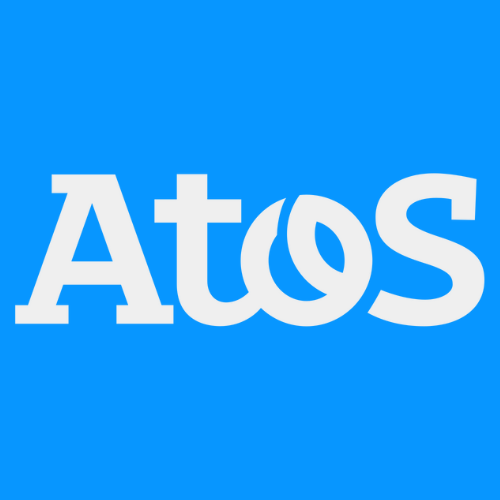

Création d’un site web institutionnel
Thème : Développement web
Language : HTML et CSS
Date : 2023
Le but est de créer un site web à destination de la génération Alpha afin qu'ils s'informent sur une entreprise numérique, ici Atos, pour y effectuer un stage.
Nous avons donc d'abord récolté toutes les informations relatives à l'entreprise, pour ensuite créer une maquette (wireframe) pour au final créer un résumé général sur un site web. Ce résumé regroupe les informations utiles ainsi que des détails sur la transition écologique de l'entreprise. De plus, nous avons créé une page pour aider le stagiaire à faire son choix en vue d'un stage chez Atos.